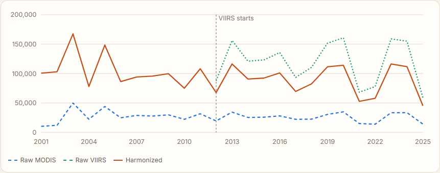
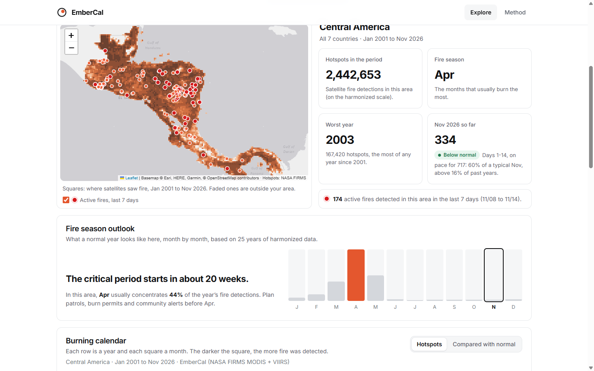
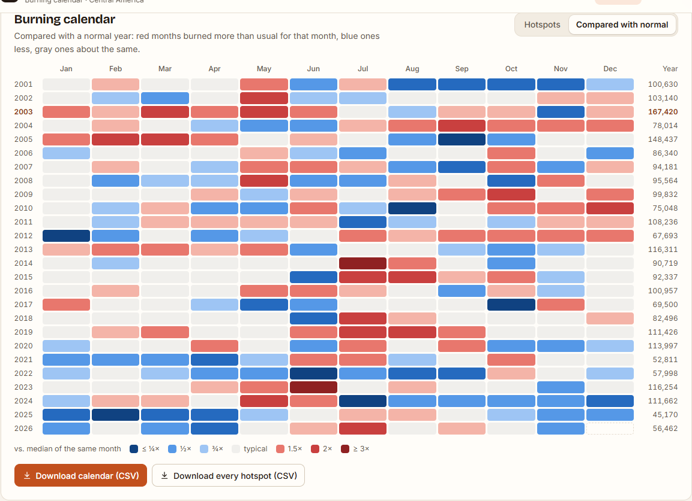
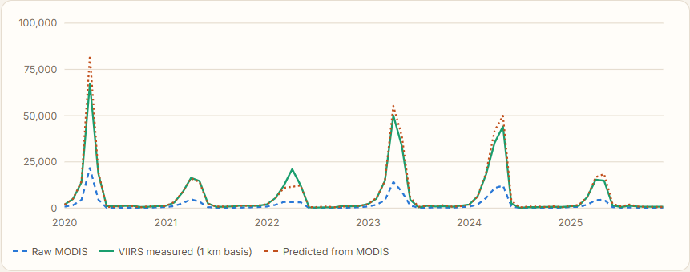

EmberCal
When does Central America burn? 25 years of NASA fire data, from two generations of satellites, on one fair scale.
- Team
- Bush Coding
- Member
- Frederic Jasmin
- Challenge
- Harmonization of MODIS and VIIRS Hot Spots
- Live app
- embercal.vercel.app
Two satellites, two different stories
Every dry season, wildfires and agricultural burns cover Central America in smoke. NASA has watched them since 2000, but with two generations of sensors that count very differently.
- 1VIIRS (2012+) sees about 5× more hotspots than MODIS for the same fires: sharper 375 m pixels count one fire several times.
- 2Early MODIS looks too quiet: before July 2002 only one of its two satellites (Terra) was flying.
- 3Stitched naively, the record invents a fake jump in 2012. Responders cannot tell if this season is really unusual.

EmberCal: a burning calendar anyone can read
- 1Pick an area: a country, a box or a point and radius on the map, or coordinates; any month range since 2001.
- 2Read the calendar: each row a year, each square a month, compared with a normal year.
- 3See what is happening now: active fires of the last 7 days and this month on pace against its history.
- 4Plan ahead: a fire season outlook says when the critical period starts and how much of the year's fire it holds.
- 5Download and share: CSV, PNG and a link that keeps the view.

Spot the unusual seasons at a glance
- 1Red months burned more than usual for that month; blue ones less.
- 22003 and 2005 stand out as the most extreme fire years since 2001.
- 3November 2026 is running at 60% of a typical November in the region, with data through 14 November.
- 4Works for any area: Guatemala alone shows 672,000 hotspots and an April-May peak.

How we put MODIS and VIIRS on one scale
1Same pixel size
VIIRS detections in the same ~1 km cell and satellite pass are counted once, like one MODIS pixel. This removes 26% of VIIRS double counts.
2Same number of satellites
Months before Aqua (July 2002) are scaled by the Terra + Aqua / Terra ratio learned for each month of the year from 2003-2019.
3Calibrated where both overlap
From 2012 both sensors watch the same fires: we learn the VIIRS / MODIS ratio for every 1° area and month, with statistical shrinkage where fires are rare.
4Ready for the next change
When the Suomi NPP feed stopped on 2 Nov 2026, NOAA-20 VIIRS took over, scaled by the ratio measured on the days both observed.
It works: a blind test on six years it never saw
Calibrated only with 2012-2019, then asked to predict from MODIS alone what VIIRS would see in 2020-2025, area by area and month by month (4,188 comparisons).

Why it matters, and what comes next
- 1For fire managers and municipalities: know when your area really burns and spot an unusual season early.
- 2Built on open NASA data: FIRMS MODIS (Terra, Aqua) and VIIRS (Suomi NPP, NOAA-20), 2.4 million hotspots, 2000 to this week.
- 3Open and reproducible: code, data pipeline and method are public.
- →Next: email alerts when a month runs above normal.
- →Next: the rest of Latin America, and burned area alongside hotspots.
- →embercal.vercel.app
github.com/fredericjasmin/embercal